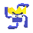
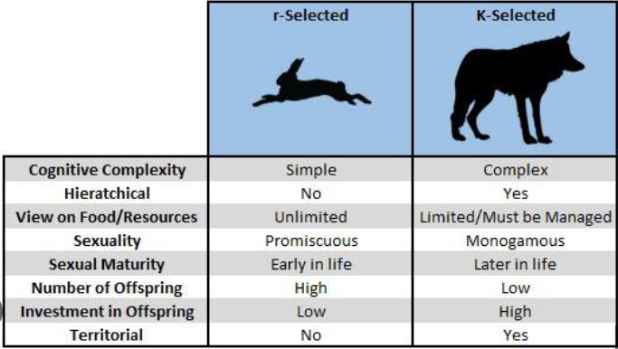
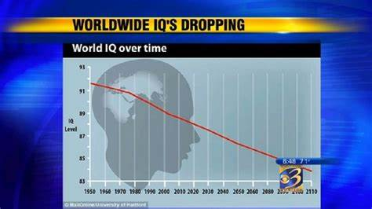
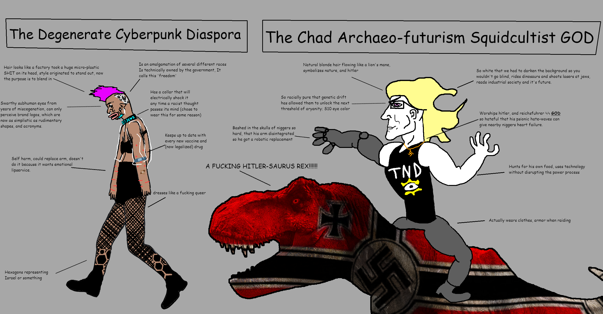
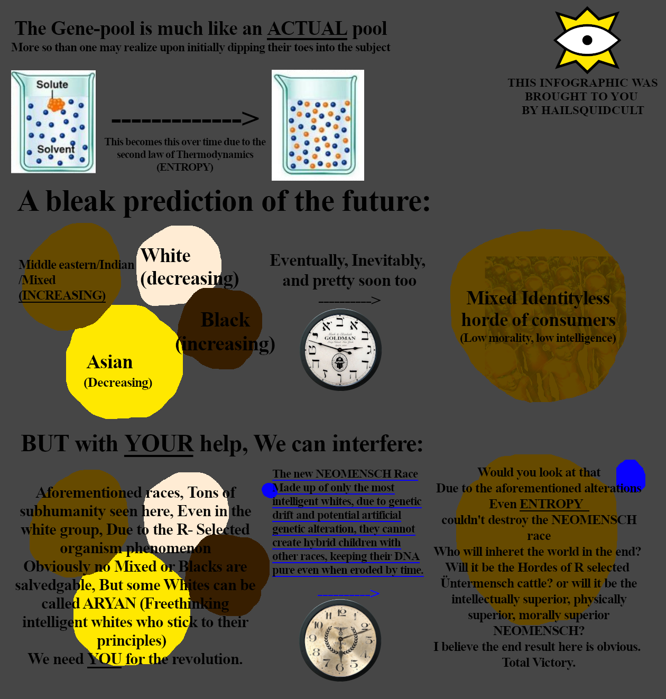

"Survival of the fittest doesn't necessarily mean survival of the best. It refers to organisms with a higher chance of reproduction in a system. The current system heavily favors R-Selected humans. Besides the immigration problems, this evolutionary force will cause humanity to lose its intelligence. And many aspects we consider to be honorable. The ONLY solution to this existential problem is a eugenics system. We seek to put that system into place, as well as securing a homeland for whites."
- Squidking

Everything will end in catastrophe if natural selection is altered to the point that gifted people are overwhelmed by billions of morons.

Subhumans - R-selected organisms pose the largest threat to any developed system or order. Subhumans exhibit an amalgamation of all the negative, unnatural traits any organism can possess. Subhumans are being utilized as golems by the Jews. The list goes on, undoubtedly, subhumans have caused massive, irreversible damage to civilization, development and racial purity. This is why subhumans must be cleansed, either through sterilization or through termination. At the same time, K-selected individuals, Aryans or just humans, must be made as genetically purified as inhumanely possible. On top of this, K-selected individuals and their genome must be modified to become even more optimal, to adapt to the rapidly-shifting threats that the Kikes and subhumans pose to civilization. This is why, a plan was devised : The Neo-Mensch plan, which entails - A)The total termination of subhuman bio-mass and B)Purification of the Neo-Mensch gene pool utilizing a metaphorical chlorine, which will make neo-mensch unable to copulate with non-neo-mensch

